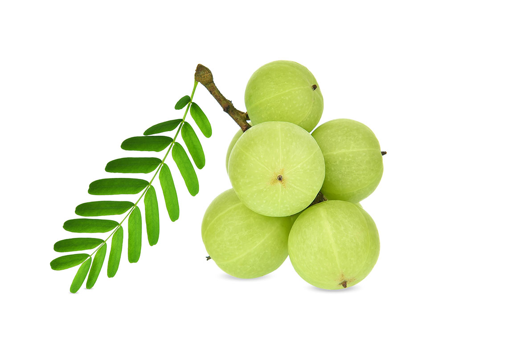

มะขามป้อม
มะขามป้อม จัดเป็นผลไม้เพื่อสุขภาพและเป็นสมุนไพรพื้นบ้านอีกชนิดหนึ่ง เพราะมีสารต่อต้านอนุมูลอิสระอย่างวิตามินซีสูงมาก โดยประโยชน์มะขามป้อมหรือสรรพคุณมะขามป้อมนั้นมีมากมาย และยังใช้เป็นยารักษาโรคบางชนิดได้อีกด้วย เพราะมะข้ามป้อมนั้นอุดมไปด้วยวิตามินและแร่ธาตุหลายชนิดที่ประโยชน์ต่อร่างกาย เช่น วิตามินเอ วิตามินบี 3 วิตามินซี ธาตุแคลเซียม ธาตุฟอสฟอรัส ธาตุเหล็ก และยังประกอบไปด้วย คาร์โบไฮเดรต ใยอาหาร เป็นต้น และคุณรู้หรือไม่ว่าวิตามินซีในน้ำคั้นจากผลของมะข้ามป้อมนั้นมีมากกว่าน้ำส้มคั้นประมาณ 20 เท่า ซึ่งมะขามป้อมลูกเล็ก ๆ 1 ผล จะมีปริมาณวิตามินซี เท่ากับส้ม 1-2 ผลเลยทีเดียว

">เนื่องจากมะขามป้อมมีรสเปรี้ยว รสฝาด อาจจะรับประทานยากสักหน่อยสำหรับบางคน การรับประทานมะขามป้อมนั้นควรปรุงรสให้อร่อยด้วยการนำมะขามป้อมมาผ่าเอาเมล็ดออกให้เหลือแต่เนื้อ แล้วนำมาใส่ พริก เกลือ น้ำตาล นำมาตำพอแหลกก็ใช้ได้ แต่ทั้งนี้ควรรับประทานก่อนนอนหรือช่วงตื่นนอนใหม่ ๆ หรือขณะที่ท้องว่าง สำหรับวิธีลดความฝาดของมะขามป้อมนั้นทำได้โดยการนำไปแช่น้ำเกลือ ด้วยการนำมะขามป้อมมาล้างให้สะอาดและลวกด้วยน้ำร้อน แล้วนำไปแช่ในน้ำเกลือที่เค็มจัด ทิ้งไว้ประมาณ 2 วัน รสฝาดก็จะหายไป
มะขามป้อมมีวิตามินซีที่สูง ใช้เป็นยาแก้ไอ ละลายเสมหะ ช่วยเสริมการทำงานระบบภูมิกันและมีสารสำคัญที่สามารถจับกับขาโปรตีนของไวรัสโควิด-19 และเป็นตัวรับ ACE2 ที่มีบทบาทการผ่านเข้าเซลล์ปอด เนื่องจากมะขามป้อมมีฤทธิ์เย็น เมื่อกินเข้าไปจะทำให้อุณหภูมิในร่างกายลดลง การกินมะขามป้อมต้องกินในปริมาณที่เหมาะสม